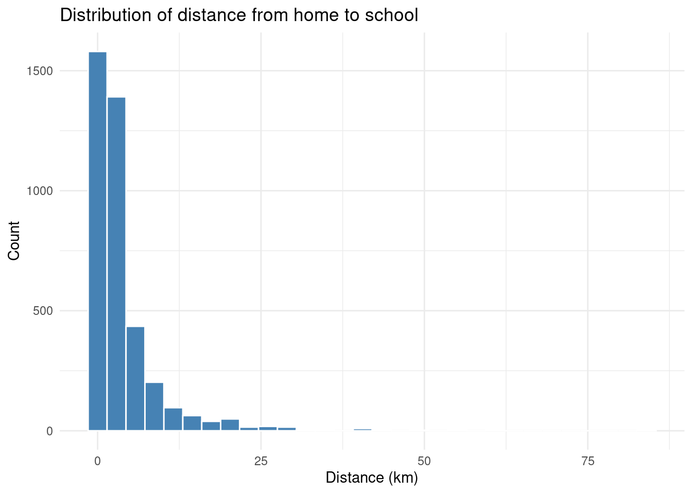
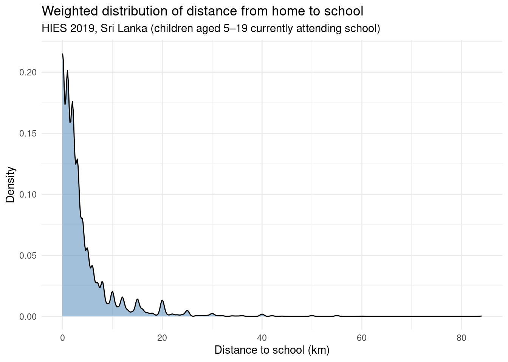
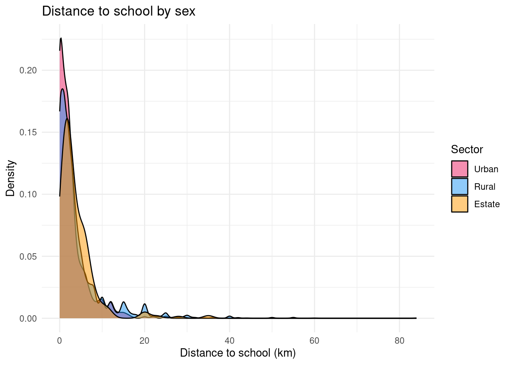
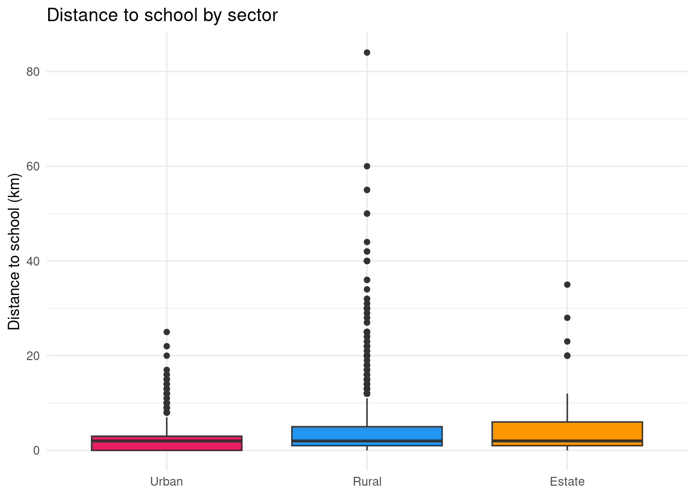
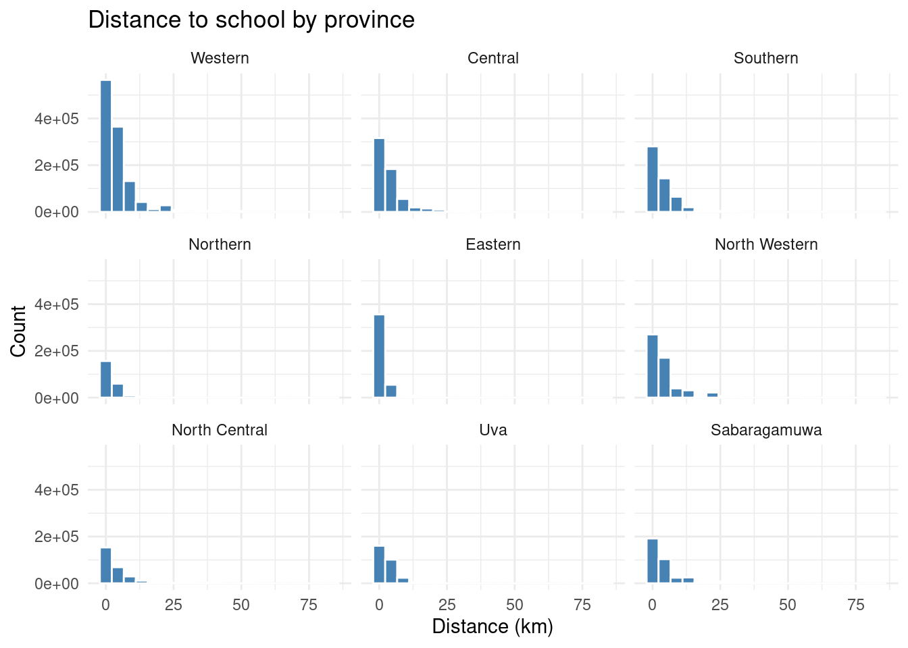
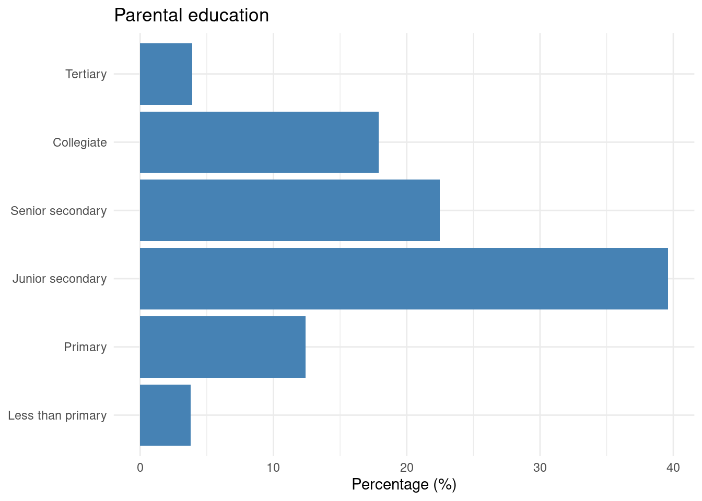
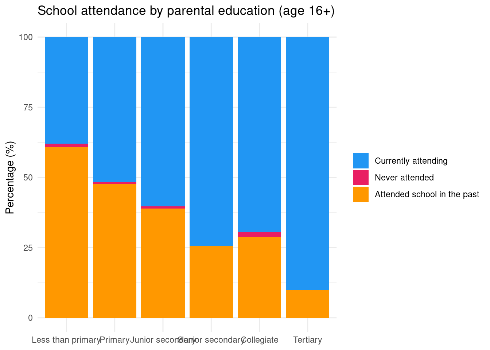

library(tidyverse)
library(arrow)
setwd("/home/groups/3genquanti/SoMix/HIES for workshop")
edu <- readRDS("edu.rds")8 Data Wrangling and Visualization
In this first session, we go further in data manipulation in R, tackling challenges that arise with large datasets and multi-file survey data. We also move beyond the point-and-click interface of esquisse to write our own data visualizations using ggplot2.
We continue working with the HIES 2019 data from Sri Lanka. By the end of this session, you will be able to:
- Read and write data efficiently using the Parquet format
- Combine variables across datasets using
mutateandcase_when - Merge datasets together using
left_joinand related functions - Understand the grammar of graphics underlying ggplot2
- Produce publication-quality graphs from scratch
8.1 Working with Large Datasets: the Parquet Format
When datasets are large — thousands of rows, dozens of variables — the standard .rds or .csv formats can become slow to read and write, and they consume a lot of memory.
The Parquet format is a modern, column-oriented storage format that is much more efficient for large datasets.
Note
Parquet files are widely used in data engineering and are natively supported in R through the arrow package.
To use Parquet in R, we first install and load the arrow package:
8.1.1 Writing a Parquet file
Let’s save our edu dataset in Parquet format. First, load the data as usual:
Now write it as a Parquet file:
setwd("/home/groups/3genquanti/SoMix/HIES for workshop")
write_parquet(edu, "edu.parquet")8.1.2 Reading a Parquet file
setwd("/home/groups/3genquanti/SoMix/HIES for workshop")
edu <- read_parquet("edu.parquet")Parquet files are typically 2–10× smaller than equivalent .rds files and much faster to read, especially when you only need a subset of columns. You can select only the columns you need at read time:
setwd("/home/groups/3genquanti/SoMix/HIES for workshop")
edu_small <- read_parquet("edu.parquet", col_select = c("hhid", "indid", "age", "sex", "distance", "finalweight_25per"))This is particularly useful with large surveys where you may have hundreds of variables but only need a few.
But here, we were able to load the required variables thanks to their name because we already know the columns of the edu dataset. What if we do not?
We can actually read the “metadata” of the parquet file without actually loading it fully:
setwd("/home/groups/3genquanti/SoMix/HIES for workshop")
rm(edu,edu_small)
edus <- open_dataset("edu.parquet")
names(edus) # noms des variables [1] "district" "sector" "month"
[4] "psu" "snumber" "hhno"
[7] "nhh" "result" "person_serial_no"
[10] "r2_school_education" "type_of_school" "grade_this_year"
[13] "grade_last_year" "distance" "transport_medium"
[16] "time_to_school" "noschooling_reason" "reason_leave_school"
[19] "when_stop_schooling" "hhid" "indid"
[22] "relationship" "edu_father" "edu_mother"
[25] "age_father" "age_mother" "edu_parent"
[28] "sex" "edu_attained" "age"
[31] "birth_year" "province" "ethnicity"
[34] "religion" "marital_status" "hhwealth"
[37] "hhwealthcat" "finalweight_25per" edus$schema # types de chaque variableSchema
district: int32
sector: int32
month: int32
psu: int32
snumber: int32
hhno: int32
nhh: int32
result: int32
person_serial_no: int32
r2_school_education: int32
type_of_school: int32
grade_this_year: int32
grade_last_year: int32
distance: int32
transport_medium: int32
time_to_school: int32
noschooling_reason: int32
reason_leave_school: int32
when_stop_schooling: int32
hhid: string
indid: string
relationship: int32
edu_father: dictionary<values=string, indices=int32>
edu_mother: dictionary<values=string, indices=int32>
age_father: int32
age_mother: int32
edu_parent: dictionary<values=string, indices=int32>
sex: dictionary<values=string, indices=int32>
edu_attained: dictionary<values=string, indices=int32>
age: int32
birth_year: int32
province: dictionary<values=string, indices=int32>
ethnicity: dictionary<values=string, indices=int32>
religion: dictionary<values=string, indices=int32>
marital_status: int32
hhwealth: double
hhwealthcat: dictionary<values=string, indices=int32>
finalweight_25per: double
See $metadata for additional Schema metadataFrom there, we can then select the relevant variable that we want to load directly into R.
Another big advantage of parquet is that we can load into R only the relevant observations for our study. Let’s say, we are interested only in the households from the Western province.
setwd("/home/groups/3genquanti/SoMix/HIES for workshop")
edus <- open_dataset("edu.parquet")
#First we check the different modalities of the variable province
edus |>
distinct(province) |>
collect()# A tibble: 9 × 1
province
<fct>
1 Western
2 Central
3 Southern
4 Northern
5 Eastern
6 North Western
7 North Central
8 Uva
9 Sabaragamuwa #Then we load the data only for the Western province
edu_western <- edus |>
filter(province == "Western") |>
collect()
#We can check that the loaded data indeed corresponds only to the Western province:
edu_western |> count(province)# A tibble: 1 × 2
province n
<fct> <int>
1 Western 982
When should you use Parquet?
Use Parquet when:
- Your dataset has more than 100,000 rows or many columns
- You frequently read only a subset of columns
- You need to share data across different software environments (Python, R, SQL engines, etc.)
For the HIES dataset used in this workshop, the benefit is modest given the size, but it becomes important in real research contexts with full survey samples, census samples, large administrative datasets…
Many large datasets from public institutions are now directly shared in the .parquet format.
Exercise
- Load
demo.rdsinto R. - Save it as a Parquet file named
demo.parquet. - Read it back, selecting only the columns
hhid,sex,age,province, andfinalweight_25per. - Compare the file sizes of
demo.rdsanddemo.parquetusingfile.info("demo.rds")$size/1024^2andfile.info("demo.parquet")$size/1024^2(dividing by 1024^2 gives the size of the file in megabytes, Mb). - Load the demographic information of the individuals belonging the to the richest households only. How many individuals fit this condition?
R and stata files
In R, we can easily load stata files (dta format) thanks to the haven package. Interestingly, we can use similar tricks as with parquet to only read the variable names and to read only certain columns of the dataset:
#If not already installed, the haven package needs to be installed:
#install.packages("haven")
library(haven)
setwd("/home/groups/3genquanti/SoMix/HIES for workshop")
read_dta("edu.dta", n_max = 0) |> names() [1] "district" "sector" "month"
[4] "psu" "snumber" "hhno"
[7] "nhh" "result" "person_serial_no"
[10] "r2_school_education" "type_of_school" "grade_this_year"
[13] "grade_last_year" "distance" "transport_medium"
[16] "time_to_school" "noschooling_reason" "reason_leave_school"
[19] "when_stop_schooling" "hhid" "indid"
[22] "relationship" "edu_father" "edu_mother"
[25] "age_father" "age_mother" "edu_parent"
[28] "sex" "edu_attained" "age"
[31] "birth_year" "province" "ethnicity"
[34] "religion" "marital_status" "hhwealth"
[37] "hhwealthcat" "finalweight_25per" edu_small<-read_dta("edu.dta", col_select = c(hhid, age, sex, province))Data management tools in these tutorials are based on the “tidyverse” which may not be optimal to handle certain operations on very large datasets.
The “tricks” shown above should allow to handle most of the data management issues you could encounter (it does solve most of my issues when working with concatenated datasets of several millions of observations).
However, in certain situations, it may not be sufficient. In these rare cases, I would turn to the data.table R package which has a different syntax but always to run complex data manipulations on large datasets, see the website’s package.
8.2 Combining Variables
In practice, we often need to create new variables from existing ones, or combine information from several variables into a single, more useful variable.
In Chapter 2 of this book, we have introduced easy-to-use functions and interfaces from the questionr package to recode categorical variables (irec()) and numeric variables into categorical variables (icut()). We can also mention iorder() which allows to easily change the order of variables.
These cases however do not cover another typical case that we often need to deal with: the creation of a variable whose modalities depend on the values of several other variables.
To achieve this using the tidyverse lingo, we use mutate() to create or modify variables, and case_when() to define conditional logic for recoding.
Note
case_when() evaluates conditions in order and assigns the value from the first condition that is TRUE. The .default or a final TRUE ~ can be used to handle all remaining cases.
8.2.1 Example: Combining parental education
In the edu dataset, edu_father and edu_mother capture the educational attainment of each parent. We might want to create a variable for household educational capital, taking the highest level between the two parents. This variable already exists in our data as edu_parent, but here is how we could have created it:
setwd("/home/groups/3genquanti/SoMix/HIES for workshop")
edu <- readRDS("edu.rds")
edu <- edu |>
mutate(edu_parent_manual = case_when(
edu_father == "Tertiary" | edu_mother == "Tertiary" ~ "Tertiary",
edu_father == "Collegiate" | edu_mother == "Collegiate" ~ "Collegiate",
edu_father == "Senior secondary" | edu_mother == "Senior secondary" ~ "Senior secondary",
edu_father == "Junior secondary" | edu_mother == "Junior secondary" ~ "Junior secondary",
edu_father == "Primary" | edu_mother == "Primary" ~ "Primary",
edu_father == "Less than primary" | edu_mother == "Less than primary" ~ "Less than primary",
TRUE ~ NA_character_
) |> factor(levels=levels(edu$edu_father))
)In this code, the symbol | means “or”. So if we read the first line in plain language, we can state: “If the father has higher education or the mother has a higher education, then (that’s the `~`) code the education of parents as higher”.
In reality, we actually coded this variable in a much simpler way:
edu <- edu %>%
mutate(
edu_parent_manual2=pmax(
factor(edu_father, ordered = TRUE),
factor(edu_mother, ordered = TRUE),
na.rm = TRUE)
)In doing this, we used the fact that edu_father and edu_mother are factor variables, i.e. they are defined levels, which we for to be ordered (argument ordered = TRUE). The levels can be checked by running: levels(edu$edu_father).
So finally, we can check that the creation of these two variables gives exactly the same distribution of parental education as before:
library(questionr)
edu |> freqtable(edu_parent) |> freq() n % val%
Less than primary 150 3.3 4.0
Primary 497 10.9 13.4
Junior secondary 1508 33.1 40.6
Senior secondary 805 17.7 21.7
Collegiate 617 13.6 16.6
Tertiary 140 3.1 3.8
NA 835 18.3 NAedu |> freqtable(edu_parent_manual) |> freq() n % val%
Less than primary 150 3.3 4.0
Primary 497 10.9 13.4
Junior secondary 1508 33.1 40.6
Senior secondary 805 17.7 21.7
Collegiate 617 13.6 16.6
Tertiary 140 3.1 3.8
NA 835 18.3 NAedu |> freqtable(edu_parent_manual2) |> freq() n % val%
Less than primary 150 3.3 4.0
Primary 497 10.9 13.4
Junior secondary 1508 33.1 40.6
Senior secondary 805 17.7 21.7
Collegiate 617 13.6 16.6
Tertiary 140 3.1 3.8
NA 835 18.3 NA
Exercise
In the edu dataset:
- Create a variable
both_parents_educatedwhich equalsTRUEif both the father and mother have at least “Senior secondary” education (i.e. their have completed O/L), andFALSEotherwise. Handle missing values appropriately. - Run a categorical bivariate analysis to check that the coding has been handled correctly (see Chapter 3 if needed).
8.3 Merging Datasets in R
A very common operation in data analysis is merging (or joining) two datasets that share a common identifier. For example, the HIES survey stores household-level information in environment.rds and individual-level information in edu.rds. To analyze, for instance, the relationship between a child’s school distance and the household’s housing conditions, we need to bring these two datasets together.
8.3.1 Types of joins
The dplyr package (part of the tidyverse) provides four main join functions:
| Function | What it does |
|---|---|
left_join(x, y) |
Keep all rows from x; add matching rows from y |
right_join(x, y) |
Keep all rows from y; add matching rows from x |
inner_join(x, y) |
Keep only rows with matches in both |
full_join(x, y) |
Keep all rows from both, fill missing with NA |
In most survey analysis contexts, left_join is the most appropriate: we start from our main individual-level dataset and add household-level variables.
8.3.2 Merging edu with environment
Let’s add some household-level variables from environment.rds to edu:
setwd("/home/groups/3genquanti/SoMix/HIES for workshop")
environment <- readRDS("environment.rds")
# Inspect the key variables
names(edu)[1:5][1] "district" "sector" "month" "psu" "snumber" names(environment)[1:5][1] "district" "sector" "month" "psu" "snumber" Both datasets share the variable hhid (household identifier). We use this as the key to merge:
edu_env <- edu |>
left_join(environment, by = "hhid")
Watch out for variable duplication!
When merging, if both datasets contain a variable with the same name (other than the key), R will automatically add suffixes .x and .y to distinguish them.
You can select specific variables from environment before merging to avoid this:
environment_subset <- environment |>
select(hhid, drinking_water, toilet_facility, cooking_fuel)
edu_env <- edu |>
left_join(environment_subset, by = "hhid")8.3.3 Checking your merge
After a merge, always verify:
# How many rows before and after?
nrow(edu)[1] 4552nrow(edu_env)[1] 4552# Are there unmatched households?
edu |>
anti_join(environment, by = "hhid") |>
nrow()[1] 0
Exercise
- The goal of the exercise if to add the class position of the household head of each household to the
edufile, in order to study how class positions matter in children’s educational attainment. - Load
demo.rdsandedu.rds. - Filter
demoto keep only the household head (filterusingrelationship==1) and select the two following variables:hhidandclass. The newly-created dataframe can be calleddemo_head. - Use
left_jointo add the variableclassfromdemo_headtoedu. Name this newly datasetedu_class. - Check that the number of rows in the merged dataset is the same as in
edu. - Bonus: among children of 16 years and more, does the proportion of currently school attending children vary by household head’s class?
8.4 Data Visualization: The Logic of ggplot2
In the previous sessions, we used esquisse to create graphs interactively, and esquisse generated ggplot2 code for us. Now, we learn to write ggplot2 code directly.
This is useful because:
- We have full control over all aspects of the graph
- Our visualizations become reproducible
- We can automate graphs (e.g., produce the same graph for each province)
8.4.1 The grammar of graphics
ggplot2 is based on a grammar of graphics: every graph is built layer by layer from a set of components:
| Component | What it defines |
|---|---|
| Data | The dataset to visualize |
Aesthetics (aes) |
Which variables map to x, y, color, size, etc. |
Geometry (geom_*) |
The type of graph (points, bars, lines, histograms…) |
| Scales | How data values are translated to visual properties |
| Facets | Splitting the graph into sub-panels |
| Theme | Non-data elements: fonts, background, grid lines… |
The basic structure of any ggplot2 call is:
ggplot(data = <DATA>, aes(x = <X>, y = <Y>)) +
geom_<TYPE>()8.4.2 From esquisse to ggplot2
Let’s say esquisse gave you this code to plot the distribution of distance:
library(ggplot2)
ggplot(edu) +
aes(x = distance) +
geom_histogram(bins = 30, fill = "#4682B4", color = "white") +
labs(
title = "Distribution of distance from home to school",
x = "Distance (km)",
y = "Count"
) +
theme_minimal()
Let’s break this down:
ggplot(edu)— use theedudatasetaes(x = distance)— mapdistanceto the x-axisgeom_histogram()— draw a histogramlabs()— add axis labels and a titletheme_minimal()— use a clean, minimal theme
8.4.3 Adding a weighted density plot
Since we are working with survey data, we might want to take the survey weights into account when visualizing distributions. A density plot weighted by finalweight_25per gives a more faithful picture of the population:
ggplot(edu |> filter(!is.na(distance)), aes(x = distance, weight = finalweight_25per)) +
geom_density(fill = "#4682B4", alpha = 0.5) +
labs(
title = "Weighted distribution of distance from home to school",
subtitle = "HIES 2019, Sri Lanka (children aged 5–19 currently attending school)",
x = "Distance to school (km)",
y = "Density"
) +
theme_minimal()
8.4.4 Comparing groups with color
One of ggplot2’s great strengths is how easily you can compare distributions across groups. Here, we compare distance to school by sector (rural, urban, estate):
# First, recode the sector (residence) variable
edu$sector_rec <- edu$sector |>
as.character() |>
fct_recode(
"Urban" = "1",
"Rural" = "2",
"Estate" = "3"
)
ggplot(edu |> filter(!is.na(distance)), aes(x = distance, fill = sector_rec, weight = finalweight_25per)) +
geom_density(alpha = 0.5) +
labs(
title = "Distance to school by sex",
x = "Distance to school (km)",
y = "Density",
fill = "Sector"
) +
scale_fill_manual(values = c("Rural" = "#2196F3", "Urban" = "#E91E63", "Estate" = "#FF9800")) +
theme_minimal()
Boxplot: comparing key indicators of the distribution
ggplot(edu |> filter(!is.na(distance)),
aes(x = sector_rec, y = distance, fill = sector_rec,weight = finalweight_25per)) +
geom_boxplot() +
labs(
title = "Distance to school by sector",
x = NULL,
y = "Distance to school (km)",
fill = "Sector"
) +
scale_fill_manual(values = c("Rural" = "#2196F3", "Urban" = "#E91E63", "Estate" = "#FF9800")) +
theme_minimal() +
theme(legend.position = "none") # legend redundant with x-axis
8.4.5 Faceting: one panel per group
Instead of overlapping distributions, we can produce separate panels using facet_wrap:
ggplot(edu |> filter(!is.na(distance)), aes(x = distance, weight = finalweight_25per)) +
geom_histogram(bins = 20, fill = "#4682B4", color = "white") +
facet_wrap(~ province) +
labs(
title = "Distance to school by province",
x = "Distance (km)",
y = "Count"
) +
theme_minimal()
8.4.6 Bar chart: categorical variables
To visualize the distribution of a categorical variable — for example, parental education — we use geom_bar or geom_col:
edu |>
freqtable(edu_parent, weights = finalweight_25per) |>
freq() |>
rownames_to_column("edu_parent") |>
filter(edu_parent != "NA") |>
ggplot(aes(x = factor(edu_parent, levels = levels(edu$edu_parent)), y = `val%`)) +
geom_col(fill = "#4682B4") +
coord_flip() +
labs(
title = "Parental education",
x = NULL,
y = "Percentage (%)"
) +
theme_minimal()
Let’s we want to plot the school attendance status of children aged 16 years old and more and how it varies according to parental education:
edu$r2_school_education_rec <- edu$r2_school_education |>
as.character() |>
fct_recode(
"Currently attending" = "1",
"Never attended" = "2",
"Attended school in the past" = "3"
)
rtab<-edu |>
filter(age>=16) |>
freqtable(edu_parent,r2_school_education_rec,weights=finalweight_25per) |>
lprop() |> as.data.frame()
rtab |>
filter(edu_parent != "Ensemble" & r2_school_education_rec != "Total") |>
ggplot(aes(x = edu_parent, y = Freq, fill = r2_school_education_rec)) +
geom_col() +
labs(
title = "School attendance by parental education (age 16+)",
x = NULL,
y = "Percentage (%)",
fill = NULL
) +
scale_fill_manual(values = c(
"Currently attending" = "#2196F3",
"Never attended" = "#E91E63",
"Attended school in the past" = "#FF9800"
)) +
theme_minimal()
Going further with ggplot2
This introduction is just a starting point. For a deeper dive, consult:
- ggplot2: Elegant Graphics for Data Analysis — the reference book by Hadley Wickham
- R for Data Science — Data Visualisation — a practical introduction
- Introduction à ggplot2 (en français) — Julien Barnier’s French-language tutorial
Exercise
Based on your statistical analyses for your quant second deliverable (D3), select important statistical analyses that you would like to plot (univariate statistics, bivariate statistics) and prepare figures for them.